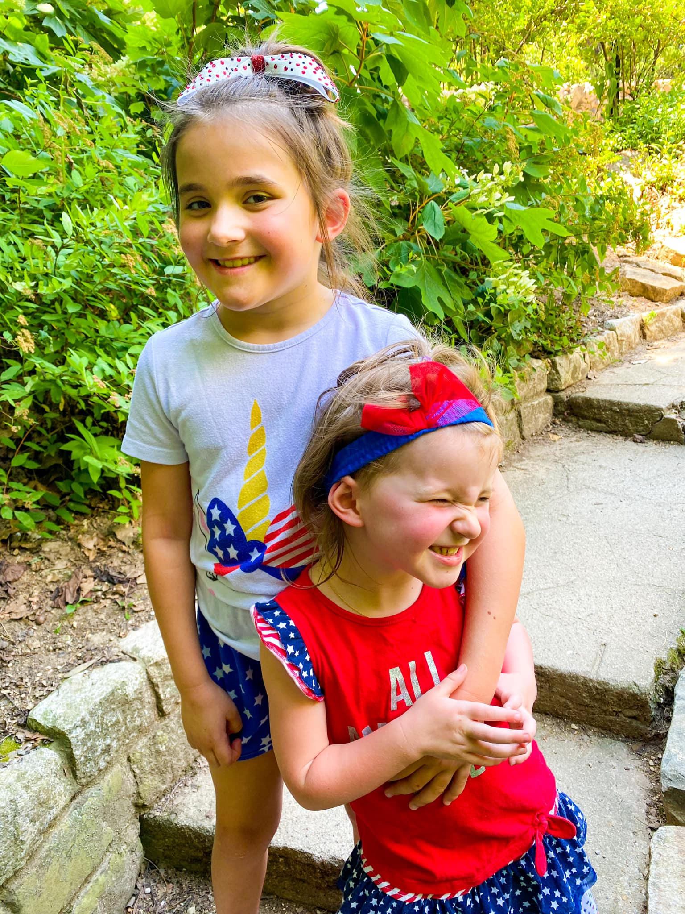
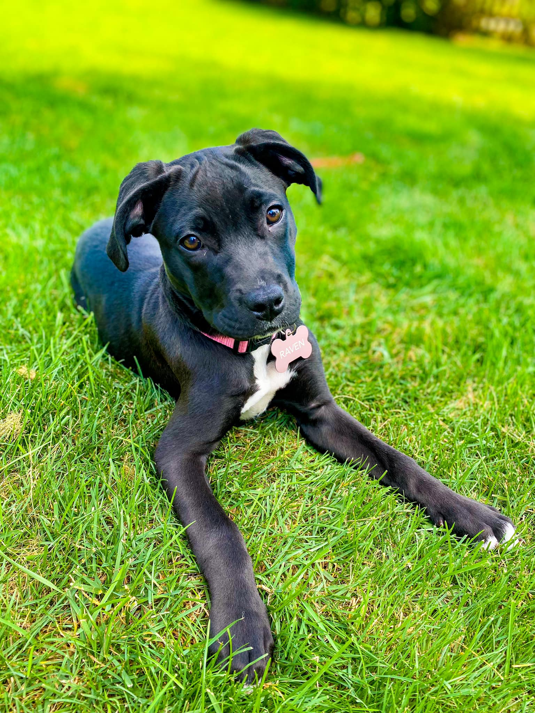
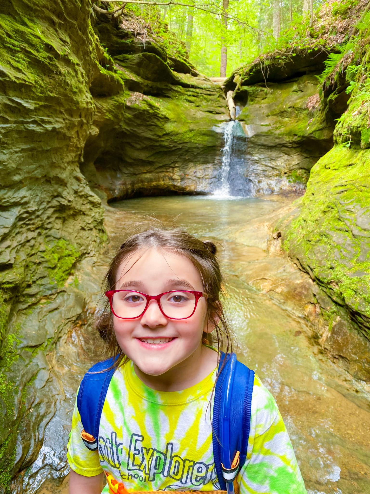

All about me
This is my sister Hanna. She is 4 years old. Our favorite thing to do together is play with Legos.
This is my dog Raven. We rescued her at 8 weeks old in July 2022. She is half Black Lab and half American Pitt.
I love to camp and canoe with my family! One of our favorite places to camp in Indiana is Turkey Run. They have amazing trails like this one!
